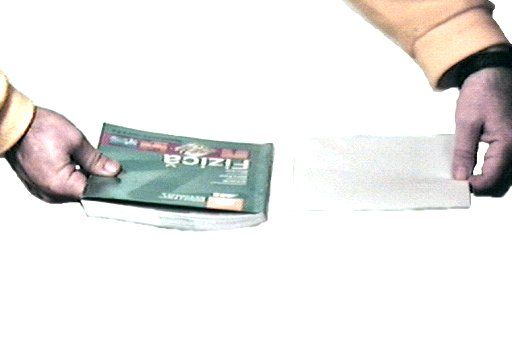

- Fig. 1
- O carte şi o foaie gata să cadă.
|
- Fig. 2
- Pământul acţionează asupra cărţii cu o forţă de atracţie gravitaţională mult mai mare decât asupra foii.
|
- Fig. 3
- Acceleraţia gravitaţională datorată Pământului.
|
- Fig. 4
- Efectul interacţiunii cu aerul.
|
- Fig. 5
- Efectul interacţiunii cu aerul este neglijabil.
|
h faţă de suprafaţa Pământului.'); return false" >
- Fig. 6
- Un corp la altitudinea h faţă de suprafaţa Pământului.
|
- Fig. 7
- Micşorarea acceleraţiei gravitaţionale datorate Pământului, o dată cu creşterea altitudinii.
|
- Fig. 8
- Efectul unei clădiri asupra acceleraţiei gravitaţionale.
|
- Fig. 9
- Efectul unei acumulări de gaze naturale asupra acceleraţiei gravitaţionale.
|